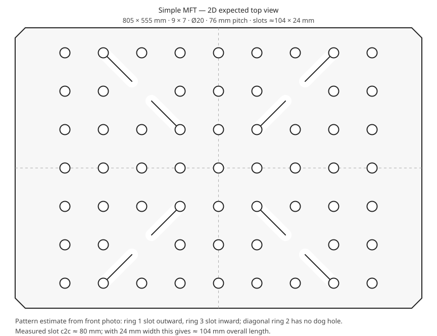

Model preview

Verified native SolidCraft image. See verification metadata below for the exact source and tool versions. Click to view full size.
A reusable CRAFTMAKER-inspired worktop component: one 18 mm native Box, four straight 20 mm corner chamfers, 59 Ø20 dog holes on the nominal 9 × 7 / 76 mm grid with the four diagonal ring-2 positions omitted, and eight photo-measured native diagonal Slots.
Files
Download the original Python sources and generated command plan.
Command JSON describes CAD actions; it is not an already-saved .sc design.
Construction stages
- Box — 805 × 555 × 18 mm
- Dog holes Sketch — one Circle seed and one native 9 × 7 rectangular pattern create 63 profiles
- One selective cut uses 59 profiles and leaves the four diagonal ring-2 positions at (±152, ±152) mm
- Clamp slots Sketch — one master Slot, one native sketch pattern and three mirrors create 8 Slots
- Two through-all cuts — one for dog holes and one for clamp slots
- Chamfer — four straight 20 × 20 mm plan-view corner cuts
Open this model in SolidCraft Web
The native editable model is available in SolidCraft’s official web application, hosted at docs.solidcraft.io.
External website: selecting the link below opens the SolidCraft website in a new tab. Your browser downloads the web application from SolidCraft’s servers, which generates network traffic for SolidCraft. The .sc model itself is hosted here on our GitHub Pages site. We do not embed the application.
You are leaving brainboxemb.github.io for docs.solidcraft.io. If you prefer not to use the external web app, download the native .sc file and open it locally in the matching SolidCraft release.
Reference and 2D expectation


The 76 mm pitch, 20 mm corner cuts and ≈104 × 24 mm Slot dimensions are photo-based estimates, not manufacturer specifications.
Python component — actual geometry
models/advanced/simple_mft/scpf/model.py is compiled directly by SCPF and imported unchanged by assemblies. There is no launcher or standalone wrapper model.
"""Simple MFT worktop inspired by the Craftmaker S30 replacement top.
The plate envelope and dog-hole diameter follow the published replacement-top
dimensions. The 76 mm pitch, 20 mm corner cuts and clamp-slot dimensions are
photo-based design estimates, not manufacturer dimensions.
The current 2D expectation is calibrated from the front product photo:
- slot width about 24 mm;
- slot end-centre distance about 80 mm, giving about 104 mm overall length;
- per diagonal arm, the inner slot starts on grid ring 1 and extends outward;
- the outer slot starts on grid ring 3 and extends inward;
- the four diagonal grid-ring-2 dog-hole positions are omitted.
The dog holes deliberately follow a normal SolidCraft workflow:
- one Circle seed;
- one associative 9 x 7 Sketch rectangular pattern;
- one selective cut using 59 of the 63 closed profiles.
The clamp slots use one Slot seed, one Sketch pattern and three mirrors.
"""
from math import sqrt
from scpf import (
Anchor,
Axis,
Box,
Circle2D,
Depth,
Edges,
Sketch,
SlotCenterToCenter2D,
component,
)
@component(include="*")
class SimpleMFT:
width = 805.0
depth = 555.0
thickness = 18.0
hole_diameter = 20.0
hole_pitch = 76.0
corner_chamfer = 20.0
COLUMNS = 9
ROWS = 7
SLOT_WIDTH = 24.0
SLOT_CENTER_DISTANCE = 80.0
def build(self):
board = Box(
self.width,
self.depth,
self.thickness,
anchor=Anchor.BOTTOM,
)
# Build the dog-hole geometry as ONE native associative SolidCraft
# Sketch pattern. The sketch contains all 9 x 7 = 63 Circle profiles;
# we deliberately keep the pattern complete instead of constructing
# 59 independent holes in Python.
p = self.hole_pitch
pitch = float(p.value)
with Sketch(name="Dog holes", on=board, parent=Anchor.TOP) as holes:
seed = holes.add(
Circle2D(d=self.hole_diameter),
offset=(-4 * p, -3 * p),
)
holes.rectangular_pattern(
seed,
count=self.COLUMNS,
spacing=p,
direction=Axis.X,
count2=self.ROWS,
spacing2=p,
direction2=Axis.Y,
)
# Four diagonal ring-2 positions must remain solid because that clear
# space belongs to the clamp-slot layout. These are grid coordinates,
# not millimetre coordinates: with the current 76 mm pitch they are
# the four positions at (±152, ±152) mm.
excluded_dog_hole_grid_positions = {
(-2, -2),
(-2, 2),
(2, -2),
(2, 2),
}
# SolidCraft's native solid.extrude can select closed Sketch regions
# by a point inside each region. SCPF passes these 59 points directly
# as native profile picks; it does NOT create 59 separate Circle/cut
# features. SolidCraft stores the selected regions by their surrounding
# sketch curves, so the cut continues to follow the associative 9 x 7
# pattern when its saved parameters (for example pitch) are changed.
#
# exact_regions=True means each point selects exactly the closed region
# that contains it. The four excluded pattern regions therefore stay
# uncut while the other 59 become one native through-all extrusion.
dog_hole_profile_picks = [
(column * pitch, row * pitch)
for row in range(-3, 4)
for column in range(-4, 5)
if (column, row) not in excluded_dog_hole_grid_positions
]
board = board - holes.extrude(
Depth.THROUGH_ALL,
profiles=dog_hole_profile_picks,
exact_regions=True,
)
# SolidCraft 0.42 direct Slot creators use fixed numeric profile points.
slot_center_distance = float(self.SLOT_CENTER_DISTANCE)
slot_width = float(self.SLOT_WIDTH)
along_axis = slot_center_distance / sqrt(2)
inner_ring = (pitch, pitch)
inner_outward = (
pitch + along_axis,
pitch + along_axis,
)
# Translation from the inner Slot to the outer Slot on the same arm.
# SolidCraft normalises the (1, 1) direction vector.
slot_pattern_spacing = (
2 * sqrt(2) * pitch - slot_center_distance
)
with Sketch(name="Clamp slots", on=board, parent=Anchor.TOP) as slots:
master_slot = SlotCenterToCenter2D(
inner_ring,
inner_outward,
slot_width,
)
upper_right = slots.rectangular_pattern(
master_slot,
count=2,
spacing=slot_pattern_spacing,
direction=(1, 1),
)
upper_left = slots.mirror(upper_right, axis=Axis.Y)
slots.mirror(upper_right, axis=Axis.X)
slots.mirror(upper_left, axis=Axis.X)
board = board - slots.extrude(Depth.THROUGH_ALL)
# Apply the four plan-view corner chamfers after the attached cuts.
board = board.chamfer(
self.corner_chamfer,
edges=Edges.VERTICAL,
)
return board
Native SolidCraft command sequence (SCPF)
- Named CAD parameterparameters.add · name: width
{ "command": "parameters.add", "params": { "name": "width", "expression": "805", "unit": "mm" } } - Named CAD parameterparameters.add · name: depth
{ "command": "parameters.add", "params": { "name": "depth", "expression": "555", "unit": "mm" } } - Named CAD parameterparameters.add · name: thickness
{ "command": "parameters.add", "params": { "name": "thickness", "expression": "18", "unit": "mm" } } - Named CAD parameterparameters.add · name: hole_diameter
{ "command": "parameters.add", "params": { "name": "hole_diameter", "expression": "20", "unit": "mm" } } - Named CAD parameterparameters.add · name: hole_pitch
{ "command": "parameters.add", "params": { "name": "hole_pitch", "expression": "76", "unit": "mm" } } - Named CAD parameterparameters.add · name: corner_chamfer
{ "command": "parameters.add", "params": { "name": "corner_chamfer", "expression": "20", "unit": "mm" } } - Box primitivesolid.box · body_name: SimpleMFT
{ "command": "solid.box", "params": { "length": "width", "width": "depth", "height": "thickness", "corner": [ "-width / 2", "-depth / 2", 0 ], "body_name": "SimpleMFT" } } - model.facesmodel.faces
{ "command": "model.faces", "params": { "body": "SimpleMFT" }, "bind": { "$face_point_1": { "field": "faces", "where": { "plane_normal": [ 0, 0, 1 ] }, "max": "area", "select": "point" }, "$face_index_1": { "field": "faces", "where": { "plane_normal": [ 0, 0, 1 ] }, "max": "area", "select": "index" } } } - Create sketchsketch.create · name: Dog holes, plane: {'face': '$face_point_1', 'body': 'SimpleMFT', 'index': '$face_index_1'}
{ "command": "sketch.create", "params": { "plane": { "face": "$face_point_1", "body": "SimpleMFT", "index": "$face_index_1" }, "project_edges": false, "name": "Dog holes" } } - Circlesketch.circle.center
{ "command": "sketch.circle.center", "params": { "center": [ "(hole_pitch * -4)", "(hole_pitch * -3)" ], "diameter": "hole_diameter" }, "bind": { "$sketch_1_profile_1": "curves" } } - Rectangular sketch patternsketch.pattern.rectangular
{ "command": "sketch.pattern.rectangular", "params": { "entities": "$sketch_1_profile_1", "count": 9, "spacing": "hole_pitch", "dir": [ 1.0, 0.0 ], "count2": 7, "spacing2": "hole_pitch", "dir2": [ 0.0, 1.0 ] }, "bind": { "$sketch_1_operation_1": { "field": "curves", "prepend": "$sketch_1_profile_1" } } } - Finish sketchsketch.finish
{ "command": "sketch.finish", "params": {} } - Extrusion / cutsolid.extrude · name: Dog holes, direction: negative, operation: cut
{ "command": "solid.extrude", "params": { "operation": "cut", "targets": [ "SimpleMFT" ], "name": "Dog holes", "through_all": true, "direction": "negative", "profiles": [ { "point": [ -304.0, -228.0 ] }, { "point": [ -228.0, -228.0 ] }, { "point": [ -152.0, -228.0 ] }, { "point": [ -76.0, -228.0 ] }, { "point": [ 0.0, -228.0 ] }, { "point": [ 76.0, -228.0 ] }, { "point": [ 152.0, -228.0 ] }, { "point": [ 228.0, -228.0 ] }, { "point": [ 304.0, -228.0 ] }, { "point": [ -304.0, -152.0 ] }, { "point": [ -228.0, -152.0 ] }, { "point": [ -76.0, -152.0 ] }, { "point": [ 0.0, -152.0 ] }, { "point": [ 76.0, -152.0 ] }, { "point": [ 228.0, -152.0 ] }, { "point": [ 304.0, -152.0 ] }, { "point": [ -304.0, -76.0 ] }, { "point": [ -228.0, -76.0 ] }, { "point": [ -152.0, -76.0 ] }, { "point": [ -76.0, -76.0 ] }, { "point": [ 0.0, -76.0 ] }, { "point": [ 76.0, -76.0 ] }, { "point": [ 152.0, -76.0 ] }, { "point": [ 228.0, -76.0 ] }, { "point": [ 304.0, -76.0 ] }, { "point": [ -304.0, 0.0 ] }, { "point": [ -228.0, 0.0 ] }, { "point": [ -152.0, 0.0 ] }, { "point": [ -76.0, 0.0 ] }, { "point": [ 0.0, 0.0 ] }, { "point": [ 76.0, 0.0 ] }, { "point": [ 152.0, 0.0 ] }, { "point": [ 228.0, 0.0 ] }, { "point": [ 304.0, 0.0 ] }, { "point": [ -304.0, 76.0 ] }, { "point": [ -228.0, 76.0 ] }, { "point": [ -152.0, 76.0 ] }, { "point": [ -76.0, 76.0 ] }, { "point": [ 0.0, 76.0 ] }, { "point": [ 76.0, 76.0 ] }, { "point": [ 152.0, 76.0 ] }, { "point": [ 228.0, 76.0 ] }, { "point": [ 304.0, 76.0 ] }, { "point": [ -304.0, 152.0 ] }, { "point": [ -228.0, 152.0 ] }, { "point": [ -76.0, 152.0 ] }, { "point": [ 0.0, 152.0 ] }, { "point": [ 76.0, 152.0 ] }, { "point": [ 228.0, 152.0 ] }, { "point": [ 304.0, 152.0 ] }, { "point": [ -304.0, 228.0 ] }, { "point": [ -228.0, 228.0 ] }, { "point": [ -152.0, 228.0 ] }, { "point": [ -76.0, 228.0 ] }, { "point": [ 0.0, 228.0 ] }, { "point": [ 76.0, 228.0 ] }, { "point": [ 152.0, 228.0 ] }, { "point": [ 228.0, 228.0 ] }, { "point": [ 304.0, 228.0 ] } ], "exact_regions": true } } - model.facesmodel.faces
{ "command": "model.faces", "params": { "body": "SimpleMFT" }, "bind": { "$face_point_2": { "field": "faces", "where": { "plane_normal": [ 0, 0, 1 ] }, "max": "area", "select": "point" }, "$face_index_2": { "field": "faces", "where": { "plane_normal": [ 0, 0, 1 ] }, "max": "area", "select": "index" } } } - Create sketchsketch.create · name: Clamp slots, plane: {'face': '$face_point_2', 'body': 'SimpleMFT', 'index': '$face_index_2'}
{ "command": "sketch.create", "params": { "plane": { "face": "$face_point_2", "body": "SimpleMFT", "index": "$face_index_2" }, "project_edges": false, "name": "Clamp slots" } } - Center-to-center Slotsketch.slot.center_to_center
{ "command": "sketch.slot.center_to_center", "params": { "p0": [ 76.0, 76.0 ], "p1": [ 132.5685424949238, 132.5685424949238 ], "width": 24.0 }, "bind": { "$sketch_2_profile_1": "curves" } } - Rectangular sketch patternsketch.pattern.rectangular
{ "command": "sketch.pattern.rectangular", "params": { "entities": "$sketch_2_profile_1", "count": 2, "spacing": 134.96046148071045, "dir": [ 1.0, 1.0 ] }, "bind": { "$sketch_2_operation_1": { "field": "curves", "prepend": "$sketch_2_profile_1" } } } - Sketch mirrorsketch.mirror
{ "command": "sketch.mirror", "params": { "entities": "$sketch_2_operation_1", "line": "y" }, "bind": { "$sketch_2_operation_2": "curves" } } - Sketch mirrorsketch.mirror
{ "command": "sketch.mirror", "params": { "entities": "$sketch_2_operation_1", "line": "x" }, "bind": { "$sketch_2_operation_3": "curves" } } - Sketch mirrorsketch.mirror
{ "command": "sketch.mirror", "params": { "entities": "$sketch_2_operation_2", "line": "x" }, "bind": { "$sketch_2_operation_4": "curves" } } - Finish sketchsketch.finish
{ "command": "sketch.finish", "params": {} } - Extrusion / cutsolid.extrude · name: Clamp slots, direction: negative, operation: cut
{ "command": "solid.extrude", "params": { "operation": "cut", "targets": [ "SimpleMFT" ], "name": "Clamp slots", "through_all": true, "direction": "negative" } } - Chamfered edgesolid.chamfer
{ "command": "solid.chamfer", "params": { "edges": [ [ -402.5, -277.5, 9.0 ], [ 402.5, -277.5, 9.0 ], [ 402.5, 277.5, 9.0 ], [ -402.5, 277.5, 9.0 ] ], "distance": "corner_chamfer", "body": "SimpleMFT" } }